|
DPFM曲线
|
导入DPFM数据
如果在开始测量前选择了存储数据，脉冲力曲线将存储在一个.wsd文件中。为了分析数据，需要使用 文件 > 导入 > DPFM数据 将其导入到项目中。选择适当的.wsd文件后，图1所示的菜单将打开。选择T-B通道，不进行任何数据缩减（输入1作为 数据缩减），然后点击 提取全部。
导入的脉冲力曲线作为新的图形数据对象出现，可以类似于光谱数据数组进行处理。
新的.wip文件可能非常大，您可能会耗尽内存。请检查您的 内存选项。
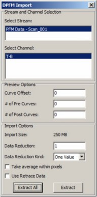
图1：DPFM导入窗口。
偏移校正
作为第一步，应对导入的脉冲力曲线执行背景扣除。逼近或测量期间T-B信号的轻微漂移可能影响粘附力值。 背景校正 可以消除此误差。使用零阶多项式（图2（a）），在曲线上蓝色区域高亮的范围内进行（图2（b））。背景扣除的结果如图3所示（蓝色曲线）。
使用 图形查看器上下文菜单 将曲线的x轴单位从deg更改为rad（双击数据对象即可在图形查看器中打开数据）。
以下所有操作均使用背景校正后的曲线，单位为 rad。
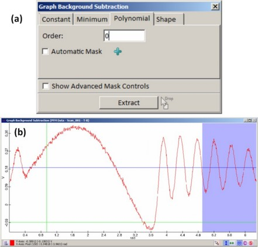
图2：图形背景扣除菜单（a）和范围选择示例（b）。
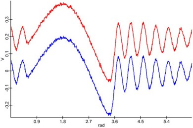
图3：背景扣除的结果：原始曲线（红色）和校正后的曲线（蓝色）
粘附力
为了创建粘附力图像，使用 滤波器查看器 配合最小值滤波。为此滤波器选择合适的范围（图4（a））。基于得到的以V为单位的图像（图4（b）），按照 DPFM图像 部分中的步骤计算以nN为单位的粘附力图像（图4（c））。
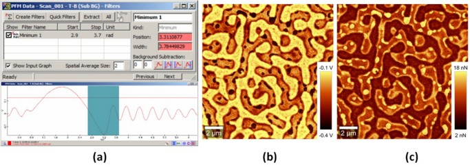
图4：使用WITecProject的滤波器管理器结合最小值滤波和适当的滤波选择范围从PFM曲线评估粘附力（a），从滤波器管理器提取的图像（b）和评估的粘附力图像（c）。
刚度
使用高级拟合工具中的 拟合并提取全部 是 Plus功能。
刚度由DPFM曲线上升部分的斜率定义。通过使用 高级拟合工具，可以在每个图像像素处将一阶多项式拟合到曲线上。
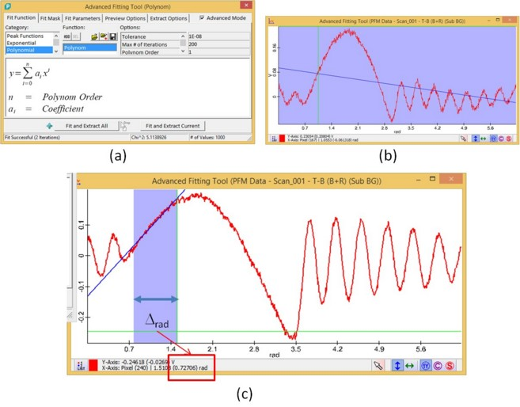
图5：一阶多项式拟合的高级拟合工具（a），与拟合工具一起打开的图形查看器（b），显示所选感兴趣范围以及蓝色拟合曲线的图形窗口（c）。
现在可以使用斜率图像，利用 公式（6） 确定以nm为单位的穿透深度，从而确定相应的刚度图像，同时也参照 DPFM图像 部分。此特定测量的示例如以下两个方程所示，结果图像见图6。
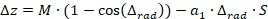
(15)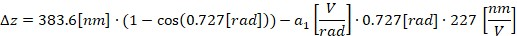
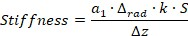
(16)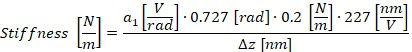
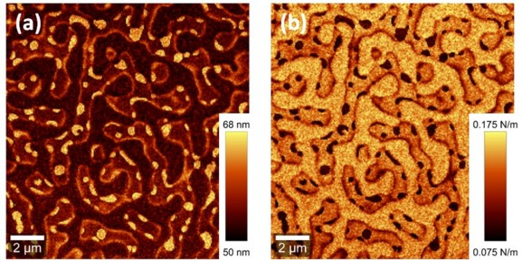
图6：使用高级拟合工具以及公式15和16评估的穿透深度（a）和刚度（b）图像。
从DPFM测量获取力-距离曲线
DPFM曲线可以显示为力-距离曲线：
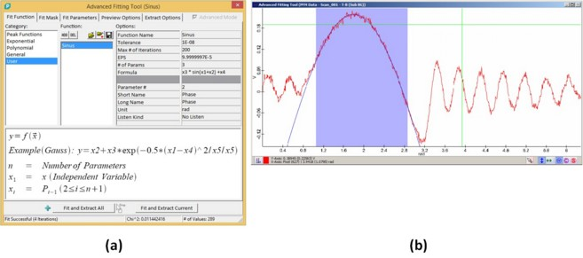
图7：高级拟合工具中正弦拟合函数的示例（a）和PFM曲线中拟合区域选择的示例（b）。
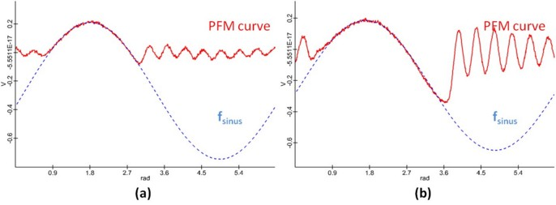
图8：来自坚硬（a）和柔软（b）测量点的PFM和f正弦 曲线，以相同y轴表示。
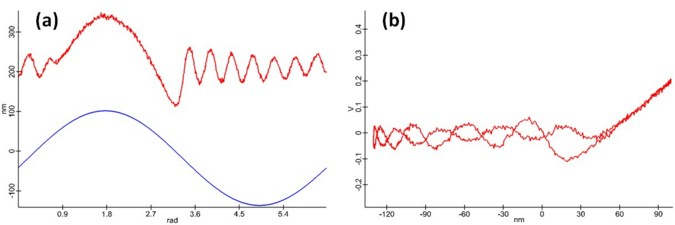
图9：在一个图形查看器中显示的DPFM和f调制-距离 曲线示例（a），以及从DPFM测量获得的力-距离曲线（b）。